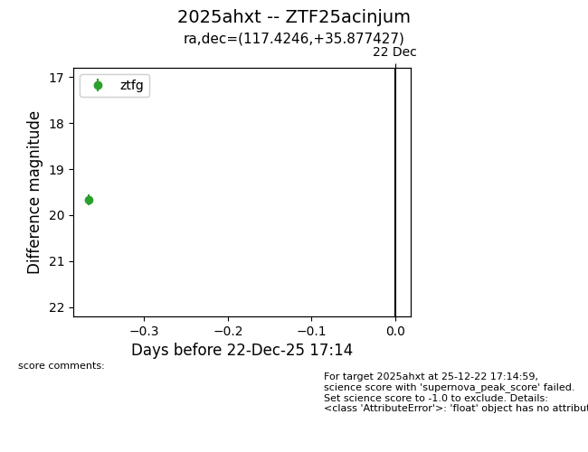
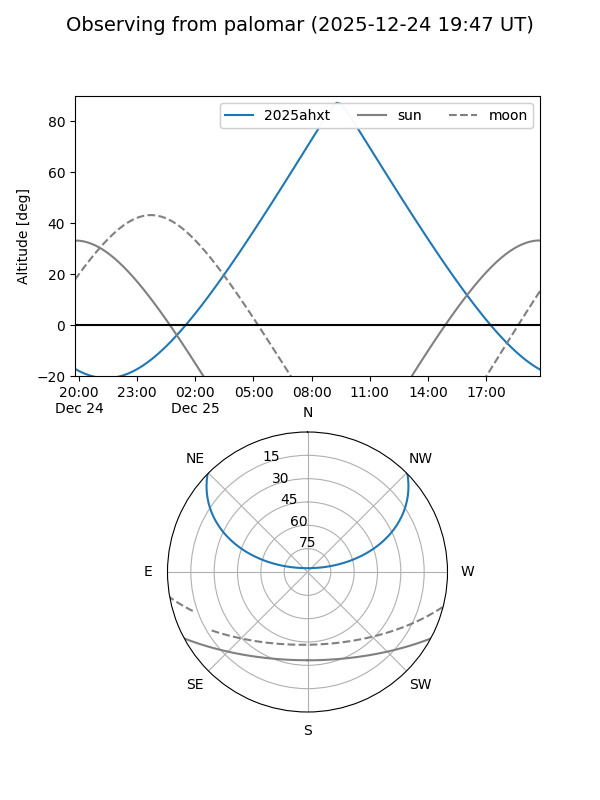
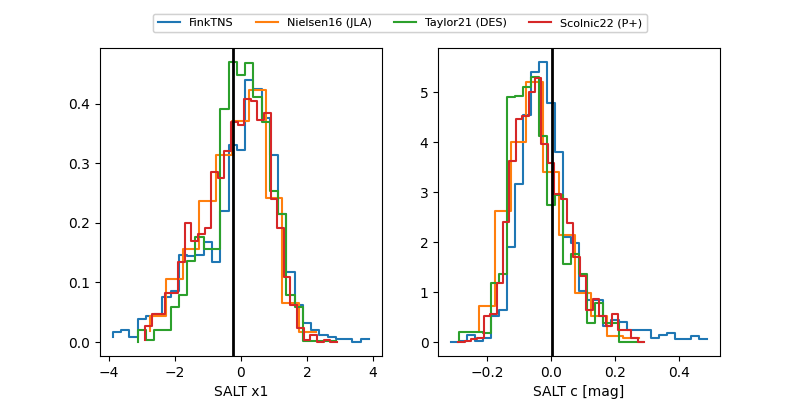

2025ahxt
Target 2025ahxt at 2025-12-24 17:20
Aliases and brokers:
FINK: fink-portal.org/ZTF25acinjum
Lasair: lasair-ztf.lsst.ac.uk/objects/ZTF25acinjum
ALeRCE: alerce.online/object/ZTF25acinjum
TNS: wis-tns.org/object/2025ahxt
YSE: ziggy.ucolick.org/yse/transient_detail/2025ahxt
alt names
ZTF25acinjum (ztf,fink_ztf)
2025ahxt (tns,yse)
Coordinates:
equatorial (ra, dec) = 117.4246,+35.87743
equatorial (HMS+DMS) = 07:49:41.90,+35:52:38.74
galactic (l, b) = (184.2707,+26.65269)
Flags:
Photometry:
last ztfg=19.67, ztfr=19.74
1 ztfg, 1 ztfr detections
Lightcurve

Visibility


Additional plots
